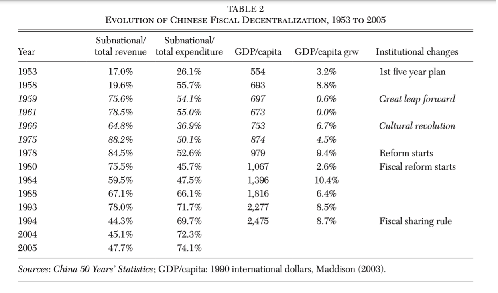
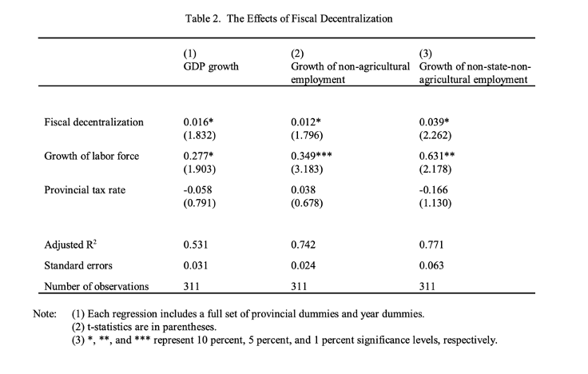

From 1980 to 2015, in what was undoubtedly one of the single greatest moments in human history, China reduced its official poverty rate by 95 percent. The following are notes from some prominent literature that discuss how this happened and the significance (or lack thereof) of decentralization in that journey.
In economic theory, those in favor of decentralization argue that actual decentralization allows competition and allows local actors to benefit from the products of their own work, creating incentives and personal stakes to work in public interest (see Cooter, 2003; Kotsogiannis and Schwager, 2006; Shah, 1997; Shleifer and Vishny, 1993). Such economists also identify the positive externalities of information spillovers from regional experimentation which can be richly pedagogical for both the center and other states. Moreover, they argue, decentralization weakens corruption because competition among subnational governments constrains bureaucratic behavior.
Those in opposition to decentralization argue for central planning given the large amount of information that they believe is required for planning. They highlight the distributional effects—decentralization could amplify regional inequality. Local leaders are also likely to be risk averse vis a vis the centre on experimentation due to a lack of political hedging for the former—local leaders have all their eggs in just that one basket (see Cai and Treisman, 2008; Weingast, 2008).
Jin, Qian, and Weingast (1999) and Weingast (2008) stress on adopting their “second generation theory” of decentralization and their ideal model of it. They establish two prerequisites for decentralization to become actual: first, interregional competition or, in other words, the lack of regional protectionism, and second, the retention of marginal revenues—linking local budgets with local revenues. Essentially, anything your jurisdiction makes over $x is yours. This, they posit, is meaningfully distinct from the first generation model of fiscal federalism. In the first generation, Hayek (1945) emphasized the advantages of decentralized decision-making in terms of best utilizing local information. Whereas, Tiebout (1956) argued that competition among local governments on expenditure allocation allows residents to sort themselves and match their preferences with a particular menu of local public goods—a sort of spatial equilibrium model where the preferred state of the world is for residents to move to better off regions rather than to fight regional inequality. Musgrave (1959) and Oates (1972) believed that decentralized allocations were the appropriate assignment of taxes and expenditures to the various levels of government to improve welfare.
In contrast, second generation fiscal federalists adopt a more empathetic narrative. Fundamentally, by disentangling the principal—elected representatives and, ultimately, citizens—from bureaucratic and administrative agents, the basic argument for federalism here is that localizing rewards aligns agents' incentives with the principal. Further, they say, government should not lead economic development, should not be controlling industry. It would do more harm than good if not constrained in its role; instead, those in government should be rewarded for corresponding local private market outcomes. Second generation theorists, like Tiebout before them, still do believe though that amenities and public goods will create a spatial equilibrium: let people move rather than enforcing equality at a lower welfare level. But, they do support at least some proportional revenue sharing to mitigate regional inequality. Still, they argue that the centralized redistributive transfer systems induce greater corruption and rent seeking.
Despite the federalist banter, decentralization has a mixed record on corruption. For instance, Treisman (2000) finds that federal systems are more corrupt than non-federal ones. In defense, SGFF theorists cite their being second generation: subpar setups of decentralization are unlikely to improve welfare. Because competition among subnational governments is one of the mechanisms for policing corruption, decentralization must satisfy the conditions of having a common market and mobile factors of production, give sufficient subnational policy authority to local government, and a hard budget constraint to still regulate local governments. Most decentralized countries fail to satisfy these conditions; therefore, they fail to prevent corruption says the Stanford political scientist, Barry Weingast.

The story of growth in China after the '80s is much debated and a partially open question. There is much competition over the imagination of both what reforms happened and which of these were responsible for the China's rapid growth and poverty alleviation. Jin, Qian, and Weingast (1999) spot three reforms that indicate successful decentralization from roughly 1982 to 1992: local governments got the primary fiscal planning and decision-making role for their jurisdiction, newfound mobility inducing interregional competition, and local incentives stemming from the local retention of marginal revenues.
To elaborate, the Chinese federalist reforms broadly had three themes. First was the decentralization of fiscal regulation, expenditure, and public good provision. Herein, Chinese local governments supervise about three quarters of the state industrial firms in terms of output; they also have a major responsibility for state fixed investments, initially in industry but increasingly in infrastructure. Moreover, local governments have primary authority over regulating local economy, performing tasks like licensing, defining the role of non-state firms, coordinating urban development plans, and even resolving business disputes. Finally, local governments provide an array of local public goods such as schools, health care, culture, police, and infrastructure/facilities. Circularly, such infrastructure plays an important role in attracting foreign investment into their localities. The second theme was around performance appraisal: the promotion of officials who contribute to local economy. The third was China’s new fiscal contracting system which led to large gains in marginal revenue retention for provinces. Five-year contracts were drawn between local government and center on revenue sharing: fixed amounts with annual increments are owed to the centre and the region keeps everything beyond that. Thus, China’s decentralization resembles much of what SGFF theorists would describe as an ideal setup of fiscal federalism.
Typically, research cites three reforms as products of local innovation and competition. First was the institution of the Household Responsibility Scheme of land division and redistribution, moving China from communes to private agriculture. The second was the creation of special economic zones in the Guangdong and Fujian Provinces. The third is the differential profit retention schemes introduced for state enterprises in Sichuan and Hubei which ultimately replaced profit remittances with taxes, beginning the conversion of PSUs to market corporations and beginning the march towards their eventual privatization. Besides these, some also highlight the success of locally managed Township and Village Enterprises, particularly relative to central state enterprises.
Broadly, there are a few theories of China's growth and the role of decentralization in it, often using parallel datasets (say, at different levels of aggregation) and parallel methods to substantiate their assertions. However, across theories, a few things are agreed upon. First, that China viewed decentralized actors as strategic self-interested players, abandoning the premise of benevolence in civil service. It created a positive-sum relationship between government and agents. (Jin, Qian, and Weingast, 1999) The direct implication of this is that performance-based promotions motivated career incentives of bureaucrats to do better. Establishing that performance was being rewarded, Li and Zhou examined the top officials in twenty-eight provinces in 1979-1995 and found promotions were significantly more likely—and demotions less likely—in provinces with higher growth. Similarly, Maskin et al. (2000) found provincial officials were more often promoted to the Party’s Central Committee if their province’s relative growth rate increased. Xu (2011) argues that this tournament style competition in China was an important cause for its growth. Further, there is some agreement that by incorporating regional experimentation into the central government's decision-making process, reforms were less likely to be blocked, and the political and technical risks of reforms were greatly reduced.
Lacking democracy, the rule of law, and other traditional constitutional constraints on the national government, theorists have long associated China’s transition to markets with the devolution of authority from the central to local governments. They argue that decentralization-induced incentives caused the growth of rural enterprise employment, changes in the share of non-state-agricultural employment, and non-state-industrial output; they also caused improvements in GDP growth, growth of non-agricultural employment, and growth of non-state-non-agricultural employment (tables from Jin et al. below; see Montinola, Qian, and Weingast, 1995; Chang and Wang, 1998; Xu and Zhuang, 1998; Jin, Qian, and Weingast, 1999; Qian, 2002; Xu, 2011). This is in contrast to Andrei Shleifer’s 1997 study of Russia after the collapse of the Soviet Union: despite decentralization, he finds local government revenues were extracted by the aggregating regional government, thereby stealing incentives, and inducing grabbing behavior in Poland and other former Soviet Union territories. So, despite the higher disinvestment of PSUs in Russia vis a vis China during their respective reform years, Shleifer observes lower economic outcomes in Russia, associating it with a lack of decentralized incentives. So, SGFF theories are reverberated in the Chinese evidence, and going even further, Jin et al. (1999) argue that, counterintuitively, this quasi market allocation of resources also improved the horizontal distribution of expenditure across regions.


Qian (2002) also negates some counterarguments to explain Chinese growth as primarily caused by decentralization. Qian argues that the role of FDI was not as significant, and that if it were, West Germany’s relative poverty vis a vis East Germany is hard to explain. Further, he concedes that agriculture liberalization did help, but cannot explain the entire puzzle without including local investments in research and development and on infrastructure.
In contrast, an alternative view of the reform process says that growth-enhancing policies emerged from competition between pro-market and conservative (which in China, funnily means Communist) factions in Beijing: in a bid to win the ideological battle on stateism and communism, Beijing found itself in a policy civil war. This faction says that much of what is called the “local innovation” arising from decentralization was actually CCP top brass heavily and secretly involving local officials to implement their ideas. So, a top-down planning apparatus behind-the-scenes. Cai and Treisman (2006) point to how some common examples of local innovation, like special economic zones, were actually likely centrally-led and how marginal revenues were not actually retained as rewards uniformly as tax rates and revenue sharing rates that were set by the center kept leaving less revenue available for local extraction over time. They also point to the fact that local governments collected a part of revenues even before this reform without any similar corresponding accomplishments vis a vis GDP or growth.
Particularly, while many who are skeptical of decentralization argue that it is unclear if it did or did not do all that much for China, Cai and Treisman go as far as to say that it is unclear if decentralization was even a net positive. They attempt to debunk explanations of fiscal incentives by arguing that these incentives were actually not as strong as presented. Total budget revenues fell from about 28 percent of GDP in 1979 to about 16 percent in 1990, depleted by tax evasion, the decline of the old state enterprises, and difficulties in collecting taxes from the new non-state sector. The actual revenue retained is the product of the marginal retention rate, the tax rate, the revenue sharing rate, and the total revenues. So, in reality, even though marginal retention percentages could have been significant, retained revenues actually fell. So, “incentives” could have actually been weakened through the reform era. Further, they point out that the state enterprises’ budget constraints did not harden despite the theory on incentives. Loss-making enterprises multiplied in the era of decentralization and rapid growth, and the state banks virtually bankrupted themselves bailing them out. Further, they argue that grassroots and provincial efforts may or may not be linked to actual decentralization: as previously described, many of the above big local experiments, especially the SEZs, had a strong central role. Most local leaders were unable to resist central abuse or exertion anyway. Wilson (2016), on the other hand, favours a reverse-causal explanation. He finds a significant and positive effect of economic growth on subsequent quality of governance, largely driven by growth in the secondary sector, but no significant effect of quality of governance on economic growth. So, perhaps it is the market growing that improved regulation and not reforms in regulation that helped the market. But this study makes a provincial comparison which was not the level at which autonomy was given—actual autonomy existed at sub-provincial levels.
Nobel Laureate Ronald Coase, some of whose greatest contributions to economics were perhaps heavily contested by the rise of a heterodox China, has his own theory, writing a book on it with Ning Wang in 2012. Coase and Wang offer a story of Chinese growth that attempts to reconcile the CCP ideological civil war point while still fundamentally demanding federalism. They argue that the traditional Chinese communist state merely survived and endured through federalism and then took credit for what federalism achieved. In that way, they argue that China’s capitalism was not an authoritarian-led capitalism in the true sense. Relevant here is Coase’s own body of work which pushes for securing property rights, eliminating transaction costs, and assuring the rule of law; while China was originally imagined as a counter-argument to Coase, Coase posits that it was the increasing creation of (less and less quasi) property rights and the formation of more agreements and contracts under unpropitious legal circumstances that led China to glory.
So, in Coase's version, while Beijing and the Politburo certainly had some role in China’s growth, it was markets that were the turning point. He credits Beijing only for revitalizing PSUs, for Hua Guofeng’s Leap Outward—a state-led, investment-driven program with a focus on heavy industry, and for Deng Xiaoping’s and Chen Yun’s macroeconomic adjustment—movement from heavy industry to consumer goods and agriculture, decentralized foreign trade—and microeconomic reforms—state-enterprise reform to offer greater autonomy and profit retention. Whereas, Coase argues, the creation of SEZs, the shift to private farming from communal agricultural, the growth of private capital and business, the advent of local Township and Village Enterprises that went on to outperform central PSUs, and the competition-induced speed of governance were all babies of decentralization.
Qian (2002) argues that the solution for China came from transitional institutions that allowed growth despite the lack of rule of law and secure private property rights, contrary to popular wisdom on institutions (like that of Coase). China improved economic efficiency by unleashing the standard forces of incentives and competition while also making the reform a win-win and, thus, interest-compatible for those in power. This is sort of a “second-best argument” which states that removing one distortion may be counterproductive in the presence of another (harder to remove) distortion. So, compromising with the CCP and finding second-best reforms, China exploited transitional institutions to manage its economy while satisfying its political economy.
Qian presents five examples of such transitional reform. These are listed as follows. (1) The Dual Track system: under the plan track, economic agents are assigned rights to and obligations for fixed quantities of goods at fixed plan prices. At the same time, a market track is introduced under which economic agents participate in the market at free market prices, for all marginal goods above the fixed quantity in the plan track, thereby allowing the market to work; (2) Township Village Enterprises’ unique ownership structure that created incentives in revenue growth for both the centre and local government; (3) fiscal contracting which ensured fixed revenue sharing with planned increments while still allowing marginal revenue retention; (4) anonymous banking (another second-best approach); (5) SOE reform (rather than privatization or disinvestment). Cheung (2014) agrees with Qian on the importance of transitional institutions. In simple terms, Cheung says, even if property rights were not secured and ownership was weak, use rights were secured for the utilization of the asset. These examples demonstrate how a transitional state deals with its sticky, authoritarian political establishment while slyly embracing the market.
This is all, of course, only the debate within neoclassical economics where the debate flails around the question of what aided the capitalist shift in China but not over whether the capitalist shift was responsible for growth. For instance, Tang et al. (2018) use a natural language processing method to confirm that there has been a rise in the frequency of neoliberal language in laws and regulations up to 2000, but argue that provinces’ market reforms do not seem to contribute all that much to their GDP per capita and foreign investment growth. Specifically, they point out that, year and province fixed effects—effects caused by attributes and qualities of the place or the year—can already explain over 70 percent of the R-squared of provincial growth regressions.
Weingast (2008) dictates how India should find market-preserving fiscal federalism. Market preserving federalism satisfies five conditions:
In contrast, despite partial federalism, Weingast points out that the Indian government's regime has failed in the following ways (especially through the 1990s):
The Finance Commission's transfers of revenue to states in India reflected a series of weights for different criteria: 62.5 percent is negatively related to a state's income, so that poorer states receive greater funds; 10 percent on the basis of population; the remainder relies on state size, infrastructure, tax effort, and fiscal discipline. This means that most of an increase in local revenues goes to the centre. Thus, many of the best-performing states then enter an arrangement where they pay more taxes than they receive revenues and where further improvements might grow this deficit—hurting incentives. So, centralized federalism prevented Indian provinces from innovating and fostering more market-enhancing local economies. Importantly, Weingast argues that as the center has loosened the constraints on states, states have become more innovative, and India’s economic growth has improved significantly.
However, a nuanced transfer system could work towards achieving all three ideal goals of revenue sharing—horizontal equalization, preventing price competition by lowering taxes between states, and ensuring high marginal fiscal incentives—by designing transfer systems with non-linear functions. This means that the poorest provinces with only limited capacity to grow in GDP or to increase taxes should be treated in a manner similar to their current treatment: great care and investment. For other provinces, Weingast proposes that the center keeps track of revenue collection by province and uses a step function to capture a moderate or moderately high proportion of revenue generated from a province up to a revenue level fixed in advance and then allows the province to keep a high or very high proportion of all revenue raised above that level. This still preserves high marginal incentives to foster local economic prosperity.
While there is much to change in the management of India's public finances, China's experiences raise more philosophical questions as to whether there is need for reorganization. Of course, particularly on the tax collection end, federalism has made things difficult for China and this must be kept in mind as well. Cui (2014) laments that a more rule-based regime with less weight and discretion for local officials would have made tax collection far less leaky. Similarly, evaluating the current state of affairs, Ahmad (2011) raises concerns over signs of fiscal indiscipline in some states as borrowings increase and hopes to tighten the gap between local government revenues and expenditures.
I will leave this discussion here and allow you to proceed to read my older post on fiscal federalism for India and the particular context of India—GST and who should borrow.
 Git:
Git: